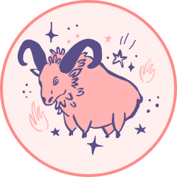
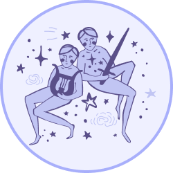
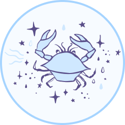
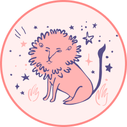

|
|
| Sign |
Element |
Cardinality |
Positive |
Negative |
Planet |
| Aries  |
Fire |
Cardinal |
Honest |
Impulsive/ Too instinctive |
Mars |
Taurus  |
Earth |
Fixed |
Stable |
Hard-headed/ Narrow-minded |
Venus |
| Gemini  |
Air |
Mutable |
Adaptable |
Superficial |
Mercury |
| Cancer  |
Water |
Cardinal |
Protector/ Devoted |
Jealous/ Capricious |
Moon |
| Leo  |
Fire |
Fixed |
Upright |
Authoritarian/ Pride |
Sun |
| Virgo |
Earth |
Mutable |
Disciplined/ Logical/ Harsh |
Lack of flexibility/ Spiteful |
Mercury |
| Libra |
Air |
Cardinal |
Diplomatic |
Indecisive/ Hesitant |
Venus |
Scorpio  |
Water |
Fixed |
Deep/ Generous |
Ruthless/ Selfish |
Pluto |
Sagittarius  |
Fire |
Mutable |
Wise/ Creative |
Too moralistic/ Fickle |
Jupiter |
Capricorn  |
Earth |
Cardinal |
Of principals/ patient |
Internalized/ Too rational |
Saturn |
| Aquarius |
Air |
Fixed |
Liberal/ Sense of friendship |
Eccentric |
Uranus |
| Pisces |
Water |
Mutable |
Charitable/ Sympathetic |
Anxious/ Irresponsible |
Neptune |